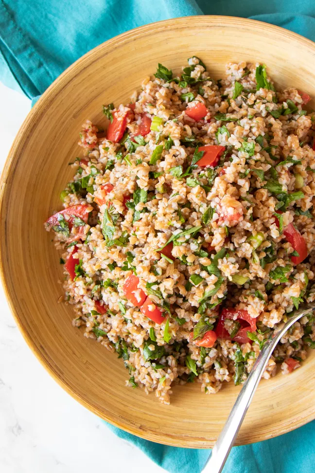

Keto Tabbouleh

This is an adaptation of a favorite no-cook tabouleh recipe. Instead of the bulgur, I substitute hemp seed hearts, which I have found to be a versatile ingredient in other recipes for which I want to remove the grains. The nice bonus is that hemp seeds are rich in magnesium – important for me because I often have leg cramps on a low-carb diet if I am not mindful of electrolytes, the essential minerals your body needs for proper functioning.
Enough with the yacking! Let's get to the recipe!
Ingredients
- 3 tightly packed cups (about 3 bunches) parsley leaves, chopped
- 1/2 cup mint leaves, chopped
- 3 medium green onions (shallots/spring onions), white and light green parts sliced
- 3 large red ripe roma (plum) tomatoes, chopped
- 2 tbsp hemp seeds
- 1 large Lebanese cucumber, quartered lengthwise then finely sliced
- Juice 1 lemon
- 2 tbsp olive oil
Instructions
- Place the chopped parsley, mint and green onions in a large bowl and spread the chopped tomatoes over the top in a thickish layer.
- Sprinkle over the hemp seeds.
- Top with the finely chopped cucumber.
- Drizzle over the lemon juice and oil.
- Cover and chill overnight until ready to serve, then toss to mix all the ingredients together.